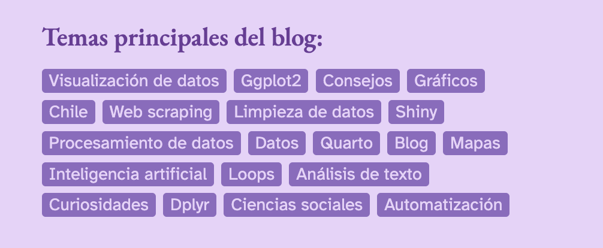
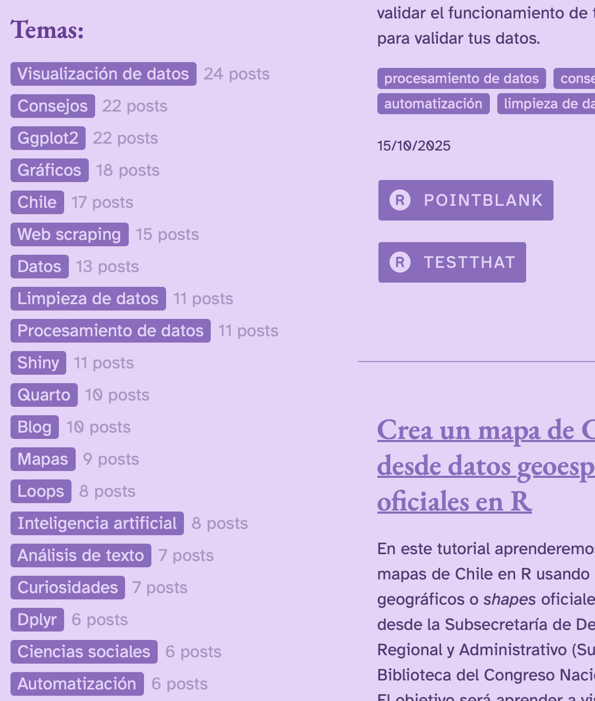
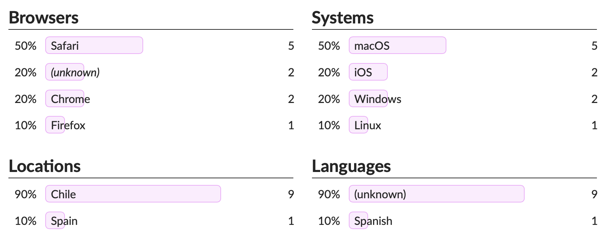

Actualización del blog: etiquetas
16/10/2025
Por fin tuve un respiro en el trabajo, así que aproveché de darle una manito de gato a este sitio. Cambié algunas cosas estéticas menores y algunas funcionalidades que tenía pendientes de hace tiempo.
Agregué al inicio del sitio un panel que contiene las etiquetas o tags más usados en el blog, para indicar los temas que trato en los posts y para que la gente interesada pueda llegar a los posts.

Pude hacerlo gracias a estas instrucciones.
También agregué otro panel con las etiquetas de los posts en la parte lateral de la página del blog, para usar ese espacio vacío y destacar los temas principales.

Como se ve en la foto anterior, también he ido agregando más botones con enlaces relacionados a cada post, incluyendo snippets de código para quienes solo quieren copiar y pegar en R (válido).
Por fin le agregué un contador de visitas de código abierto y enfocado en privacidad, GoatCounter 🐐 para monitorear el tráfico del sitio. Pude hacerlo gracias a estas instrucciones para agregar contador de visita a sitios Hugo. Por opción personal no uso Google Analytics ni ningún otro servicio que afecte la privacidad de las personas que visitan el sitio ni que usen esos datos con fines comerciales. Quizás después haga un dashboard para ver las visitas o algo así.

Finalmente, tengo algunos bocetos de posts grandes para el futuro próximo, principalmente uno sobre procesamiento de datos geoespaciales en R, que voy complementando a medida que aprendo yo misme 😌
Este sitio nació porque yo aprendí R de forma autodidacta, gracias a lo que compartían otras personas. Así que quise ayudar también a que más gente aprendiera a usar R para análisis de datos.
Con el tiempo, me di cuenta que el sitio también me sirve a mi como referencia: muy seguido entro a mi blog buscando mi propio código para copiarlo! Espero que les sirva 💜
Como siempre, el código entero de este sitio está en su repositorio.